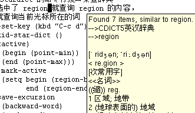

Contents
Stardict 是 Linux 下面很好用的一个辞典，不过如果在 Emacs 里面偶尔要查 一个词还要切换到 Stardict 那里去就太麻烦了，正好 Stardict 提供了一个命 令行的接口可以用，于是我写了一个调用 sdcv (即 Stardict 的命令行接口) 来查单词的小扩展。
使用 tooltip 显示结果
这个函数的功能相当有限，就是直接把参数传给 sdcv ，然后把结果显示出来， 但是对于我来说基本上已经够用而且很好用了：
我把它绑定到了 C-c d 上面，这样就可以很方便地查单词了。呵呵！效果如下，
还不错哟！

不过有时候有些音标显示不出来，这个是比较头痛的，我现在用的是 Emacs 22
，我发现可以通过 ~/.Xresources 来配置它的字符集，记得 Stardict 在安装的
时候建议安装 ttf-freefont ，那个就是用来显示音标的啦！为了让 Emacs 能够
使用这个字体，必须把他加入 X 核心字体的路径里面，具体请参见这里。
打开一个 buffer 来显示结果
Tooltip 的方式有时候工作不是那么理想，而且在终端下不可能显示 tooltip ，所以我又做了一个打开一个 buffer 来显示查询结果的函数。